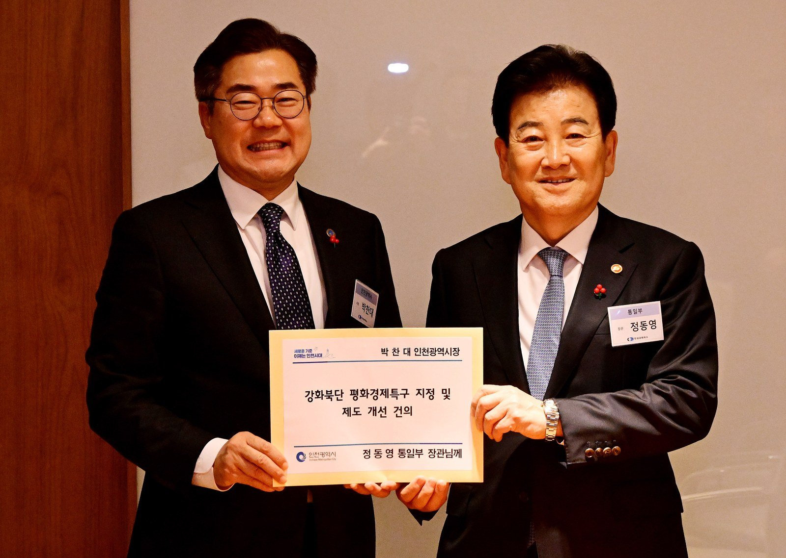
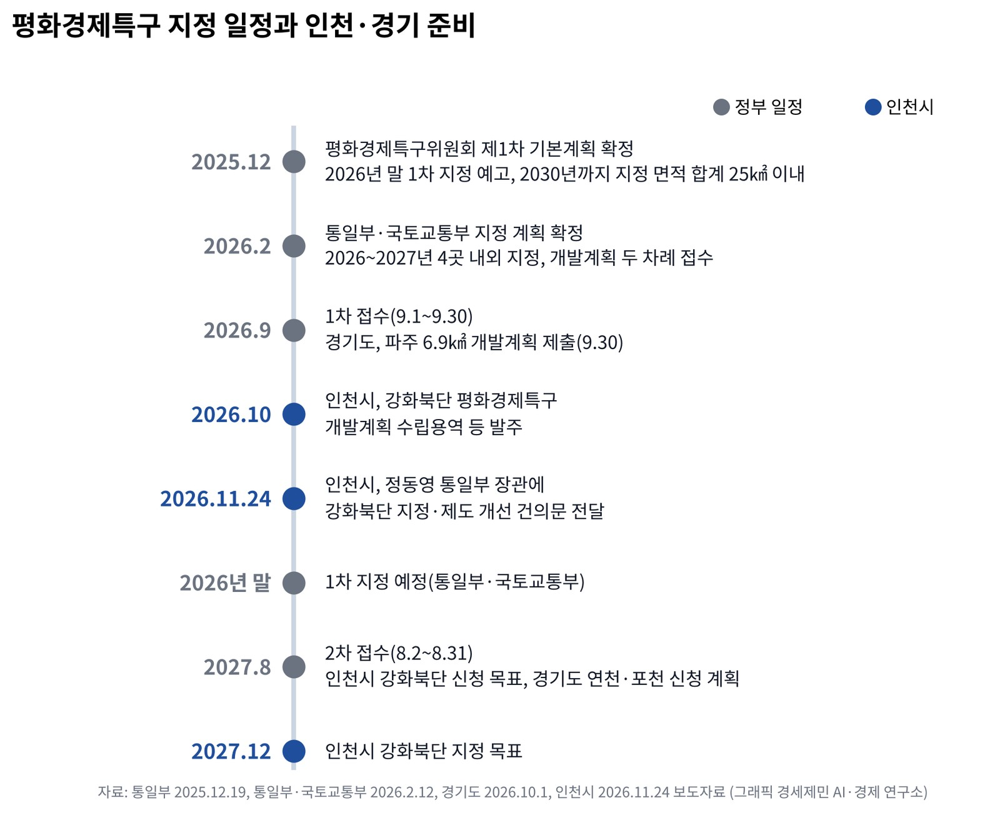

강화북단 평화경제특구 건의, 인천시 2027년 8월 신청·12월 지정 목표
통일부 장관에 균형 지정·국비 지원 확대 요청
2027년까지 4곳 내외 지정, 경기 파주 6.9㎢ 1차 신청
AI경제저널=김갑봉 기자 | 인천시가 24일 정동영 통일부 장관에게 강화북단을 평화경제특구로 지정해 달라는 건의문을 전달했다. 시는 2027년 8월 지정을 신청하고 그해 12월 지정받는 것을 목표로 잡았다.
정 장관은 이날 인천상공회의소가 마련한 특별강연을 하러 인천을 찾았다. 강연은 연수구 오크우드프리미어 인천에서 '평화경제특구 구상과 인천 경제의 미래'를 주제로 열렸다. 박주봉 인천상공회의소 회장과 지역 경제인 등 약 100명이 참석했다.

균형 지정과 국비·세제 지원 확대 요구
건의는 둘이다. 첫째는 인천·경기·강원에 고르게 특구를 지정해 달라는 것이다. 시는 강화군이 확성기 소음, 어업 제한, 심리적 불안감을 감내해 온 지역이라 정주여건을 나아지게 하려면 특구 지정이 절실하다고 적었다.
둘째는 제도 개선이다. 시는 기반시설 설치비 국비 보조율 확대와 정부 남북협력기금 활용을 요청했다. 개발사업시행자와 입주기업에 국세·지방세를 감면해 주고 부담금을 덜어 달라고도 했다. 강화군을 수도권에서 빼고, 수도권 규제와 농지전용 등 특구를 조성하며 부딪칠 개별 규제를 보완할 방안을 마련해 달라고 건의했다.
박찬대 인천시장은 "강화는 오랫동안 군사적 긴장과 각종 규제로 발전에 제약을 받아온 접경지역"이라며 "남북 간 긴장을 낮추고 평화를 이어가야 주민들이 안심하고 살 수 있고, 기업들도 새로운 투자에 나설 수 있다"고 말했다.
경기연구원은 11월 5일 「접경지역 국제평화도시 실현을 위한 추진방안 연구」를 냈다고 밝혔다. 연구원은 「접경지역 지원 특별법」이 「수도권정비계획법」과 「군사기지 및 군사시설 보호법」 등에 우선 적용되지 않아 중첩규제를 실질적으로 해소하는 데 한계가 있다고 분석했다. 법제화 방안으로는 단기적으로 이 특별법과 평화경제특구법(평화경제특별구역의 지정 및 운영에 관한 법률) 보완을 제시했다.
창업기업 법인세 3년 100% 감면, 남북협력기금 지원은 부처 협의
평화경제특구는 평화경제특구법에 따라 북한 인접지역에 지정하는 특별구역이다. 평화경제특구위원회는 2025년 12월 16~18일 서면회의에서 제1차 평화경제특구 기본계획을 확정했다.
통일부 발표를 보면 특구 안 창업기업과 신설기업은 「조세특례제한법」에 따라 법인세를 3년간 100%, 이후 2년간 50% 감면받는다. 개발사업시행자는 법인세를 3년간 50%, 이후 2년간 25% 감면받는다.
개발사업시행자가 실시계획 승인을 받으면 평화경제특구법에 따라 인허가 40여개를 함께 받은 것으로 본다. 각종 부담금도 감면·면제받을 수 있다.
평화경제특구법 제30조는 국가와 지방자치단체가 도로, 용수 등 기반시설 설치 비용을 "지원할 수 있다"고 정했다.
통일부는 2025년 12월 19일 기본계획 확정을 알리며 특구 사업 가운데 남북 교류협력 기반을 만드는 사업에 남북협력기금 등 국비를 지원하는 방안을 관계부처와 협의하고, 보조금 지원 가산 특례 같은 제도 개선도 검토하기로 했다.
경기 후보 파주·연천·포천, 인천 강화북단은 2027년 8월 신청
통일부와 국토교통부는 2026년 2월 12일 특구를 2027년까지 4곳 내외 지정한다고 발표했다. 두 부처는 개발계획을 2026년 9월 1~30일과 2027년 8월 2~31일 두 차례 받기로 했다. 개발계획은 인천시장, 경기도지사, 강원특별자치도지사가 낸다.
대상지역은 접경지역 시·군 17개(인천 2, 경기 8, 강원 7)로, 인천은 강화군과 옹진군이다. 두 부처는 2025년 12월 기본계획에서 2030년까지 지정 면적 합계를 25㎢ 이내로 관리하기로 했다.

경기도는 1차 접수 마감일인 9월 30일 파주시 파주읍·문산읍·월롱면 일원 약 6.9㎢를 특구로 지정해 달라는 개발계획을 냈다. 이 면적은 정부가 2030년까지 정한 지정 면적 상한 25㎢의 약 27.6%다(AI경제저널 계산).
경기도는 10월 1일 기업 210곳의 입주 의향을 확보했다고 밝혔고, 사업비를 약 2조원으로 추정했다. 도는 연천군과 포천시를 2027년 8월 2차 접수에 신청할 계획이다.
인천시는 1차 접수 마감 뒤인 10월 강화북단 평화경제특구 개발계획 수립용역 등을 발주했다. 지정 신청에 쓸 용역은 개발계획 수립용역을 포함해 3건, 8억원이다.
인천연구원이 맡은 인천 평화경제특구 조성 기본구상은 2026년 6월 끝났다. 강화군 평화경제특구 추진 전략용역(1억원)은 2026년 4월 시작됐다. 통일부와 국토교통부는 2025년 12월 기본계획에서 2026년 말 1차 지정을 예고했다.
참고문헌
- 「인천시, 통일부 장관에 평화경제특구 관련 건의문 전달」, 인천광역시 정책기획관 보도자료, 2026.11.24., https://www.incheon.go.kr/IC010205/view?repSeq=DOM_0000000016081927
- 「제2차 평화경제특구위원회 회의 개최 및 「제1차 평화경제특구 기본계획」 확정」, 통일부 평화협력지구추진단 보도자료, 2025.12.19., https://www.unikorea.go.kr/web/unikorea/bbs/bbs_0000000000000004/58677
- 「평화경제특구 지정을 위한 세부절차 확정」, 통일부·국토교통부 합동 보도자료, 2026.2.12., https://unikorea.go.kr/web/unikorea/bbs/bbs_0000000000000004/58908
- 「경기도, 평화경제특구 후보지로 파주시 1차 신청」, 경기도 평화기반조성과 보도자료, 2026.10.1., https://gnews.gg.go.kr/briefing/brief_gongbo_view.do?BS_CODE=S017&number=71603
- 「경기연구원, "접경지역, 규제와 보상에서 한반도 평화경제 성장거점으로"」, 경기연구원 보도자료(보고서 「접경지역 국제평화도시 실현을 위한 추진방안 연구」, 조성택 연구위원), 2026.11.5., https://gnews.gg.go.kr/briefing/brief_gongbo_view.do?BS_CODE=S017&number=71916
- 「평화경제특별구역의 지정 및 운영에 관한 법률」(법률 제19432호, 2023.6.13. 제정, 2023.12.14. 시행) 제2조·제8조·제15조·제30조, 국가법령정보센터, 2026.11.26. 열람, https://www.law.go.kr/법령/평화경제특별구역의지정및운영에관한법률
[사진 출처]
- 사진1·2 인천광역시 공보담당관 포토시정 「통일부 장관 건의문 전달」, 2026.11.24., https://www.incheon.go.kr/intv/TV010201/3095945 (공공기관 보도자료 사진)
- 도표1 경세제민 AI·경제 연구소 작성, 자료 통일부·국토교통부 2025.12.19·2026.2.12 보도자료, 경기도 2026.10.1 보도자료, 인천시 2026.11.24 보도자료
※ 이 기사는 인공지능기자 위민아이(Wemin_AI)와 협력해 작성했습니다.
관련기사
- 강화남단 경제자유구역, 지정 요청 11개월째…2차 발전계획에 담는다
- 강화·옹진, 농어촌 기본소득 시범사업에 나란히 신청
- [신도대교개통] 다음은 도로철도 영종강화대교와 강화경제자유구역
- [서해평화 가능한가⑥] 미국의 동아시아 전략, 동맹 강화와 대중 압박
저작권자 © AI경제저널 무단전재 및 재배포, AI학습 및 활용 금지